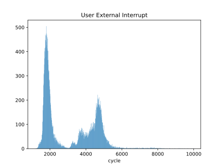

软硬协同的用户态中断
目标
本项目在现有 RISC-V 用户态中断扩展规范草案 的基础上将其进一步完善，提出一种符合该规范的模拟器和 FPGA 实现，并基于用户态中断在内核中实现优化的信号机制，在用户态实现一个硬件驱动，展示其设计和性能优势。
系统设计
系统整体架构设计如下：

- 模拟器：修改 QEMU 5.0，在其中添加 N 扩展支持
- FPGA：基于中科院计算所的标签化 RISC-V 架构，添加 N 扩展支持
- 启动器与 SBI：在 FPGA 平台上使用基于 RustSBI 开发的 lrv-rust-bl ，在 QEMU 上使用修改过的 RustSBI-QEMU 以提供多核启动支持
- 操作系统：rCore-N，能够在多核环境下运行，演示程序也在该仓库中
仓库目录和结构
.
├── README.md
├── docs docs in mdbook structure
├── Labeled-RISC-V-N Labeled RISC-V with N extension, FPGA code
├── lrv-rust-bl Labeled RISC-V fpga bootloader based on RustSBI
├── qemu qemu modified by Campbell He
├── qemu-build folder holding qemu build artifacts
├── rCore-N rCore with N extension
├── rustsbi-qemu rustsbi-qemu with legacy IPI and multicore boot support
└── rv-csr-test N extension simple test program
部分开发进展
QEMU 与 FPGA
- 在 QEMU 中添加 N 扩展支持
- 在 FPGA 开发板上部署标签化 RISC-V 架构
-
在标签化 RISC-V 架构中添加 N 扩展支持
- 通过基本测试
- 单核情况下正常运行 rCore-N
- 多核启动和运行
- 在 QEMU 和 FPGA 中添加额外的串口供用户态程序使用
操作系统
- 实现对用户态中断的管理
- 适配 FPGA 平台
- 多核支持
- 实现信号机制
应用程序
- 验证 N 扩展正常工作
- 信号机制演示程序
- 用户态串口驱动程序
- 性能测试
RISC-V 的特权级与陷入架构
特权级
现代应用处理器通常采用多特权级的设计，限制低特权级的程序访问一些特殊寄存器、内存区域或执行特权指令， 以提高系统的安全性与隔离性。如 x86 架构有 Ring0 到 Ring3 ，Arm-A z划分了 EL0 到 EL3 ， 而 RISC-V 指令集规范将 CPU 的运行状态划分为 Machine, Supervisor, User 这三个特权级。 M 态为最高的特权级，也是所有 RISC-V 平台必须实现的特权级，M 态下的指令对 CPU 有完全的控制权； S 态为通常的操作系统运行的特权级，U 态则为用户程序运行的特权级。
在实现了地址空间隔离的平台上，M 态程序不受地址空间限制，始终使用物理地址访问内存，除非将 mstatus.MPRV 置位；
S 态程序可以通过 satp 寄存器控制分页模式和页表基址，通常在初始化完成后运行在虚拟地址上；
U 态程序则完全运行在虚拟地址空间中，受页表权限控制位的限制，且无权访问和修改 satp 寄存器的内容。
在引入了虚拟化、可信执行等机制的处理器上，特权级设计会变得更复杂，如 x86 架构进一步划分了 Root 和 Non-Root 模式， RISC-V 则加入了 HS, VS, VU 特权级，本文不会重点讨论这些内容。
陷入
RISC-V 将陷入（trap）分为同步的异常（exception）和异步的中断（interrupt），异常由指令执行产生， 而中断通常来源于指令之外的因素，如时钟、外设等。中断分为外部中断、时钟中断、软件中断， 分别记为 xEI, xTI, xSI (x 为特权级，下同) ；这三者在每个特权级下有不同的中断编号， 因而 M 态的时钟中断和 S 态的时钟中断不是同一个中断。与之相对的是，异常在不同特权级下编号相同， 因为异常源于指令执行，而执行某条指令时系统的特权级是确定的，无需通过编号区分。
中断的使能和屏蔽由 xstatus.xIE 位和 xie 寄存器控制，前者为当前特权级下的全局中断使能，
后者可以独立控制每种中断的使能情况。待处理中断在 xip 寄存器中相应的位为 1 。低特权级的
status, ie, ip 寄存器均为相应高特权级寄存器的子集，即高特权级可以查看和修改低特权级的中断控制信息，
但反过来不行，如 S 态和 M 态的程序均可以通过清除 sie.STIE 来屏蔽 S 态的时钟中断，
但 S 态程序不能通过访问或修改 mie.MTIE 位来影响 M 态时钟中断的行为。这也是特权级架构提供的隔离性的体现。
默认情况下所有的陷入都由最高特权级（即 M 态）的程序来处理，高特权级的程序可以再将其转交给低特权级处理，
如将 xtval, xepc, xcause 写入相应的低特权级寄存器，清除 xip 寄存器中的相应位，再将低特权级的
中断处理函数入口地址（即 ytvec 寄存器的值）移入 xepc 中，执行 xret 指令，即可进入到低特权级的中断处理程序。
为了提高中断处理效率，RISC-V 提供了陷入委托机制，允许陷入在较低特权级处理，相应的控制寄存器为
xideleg 和 xedeleg 。高特权级的陷入不能委托给低特权级。对于已经委托的低特权级陷入，
在高特权级下将被忽略，直至返回低特权级时才进行处理。如 mideleg 中 MTI, MEI, MSI 的相应位恒为 0，
不能委托，而将 mideleg.STI 置为 1 则将 S 态的时钟中断委托给 S 态处理，此时即使 mip.STIP==1 ，
M 态也不会进入中断处理程序。
RISC-V 的 N 扩展草案
在 RISC-V 特权级指令规范 v1.11 版本中存在一章 N 扩展（即用户态中断扩展）的草案。 该扩展设计的主要目标是为嵌入式系统提供更好的安全支持，此类系统可以仅实现 M 和 U 两个特权级， 将“不可信”的用户程序代码置于 U 态执行，同时通过中断委托机制，允许其直接处理中断。 在类 Unix 系统上，该扩展主要希望为整数溢出、浮点异常、垃圾回收等发生在用户态的事件提供支持。
然而有另一些观点认为，在嵌入式系统上，使用 M 和 S 两个特权级可以实现同样的目标，只需将
satp 寄存器由硬件置为 0 ；而对于 Unix 环境下，N 扩展的应用场景尚不明朗，
长期以来也几乎无人推动 N 扩展的完善和实现。最终在 RISC-V 规范 v1.12 版本中，N 扩展被移除，
其他部分关于用户态中断的表述也相应降级。
RISC-V 其他与中断相关的扩展与规范
中断控制器不属于严格意义上的 RISC-V 指令集规范。目前仅 PLIC(Platform-Level Interrupt Controller) 有一个兼容性标准。一种常见的设计是 CLINT(Core-Local Interruptor) 搭配 PLIC，前者提供时钟中断和跨核软件中断支持，后者管理外设产生的中断。
除 CLINT 和 PLIC 之外，RISC-V 还有 CLIC(Core Local Interrupt Controller)、ACLINT(Advanced CLINT)、AIA(Advanced Interrupt Archetecture) 等扩展草案。其中 CLIC 提供低延迟、向量化、可抢占的中断系统，在草案中明确可以与 N 扩展兼容；ACLINT 为 CLINT 扩展，目前可以提供 S 态的跨核中断；AIA 主要提供对 PCIe 标准中的消息信号中断 (Message-Signaled Interrupt) 机制支持。后两者没有明确与用户态中断的兼容性。
驱动程序与跨进程通信
用户态驱动
在 Linux 系统中，大部分硬件驱动位于内核代码仓库中，与内核共同编译、运行。这种设计在安全性、 扩展性、可维护性均存在一定的问题。尽管与微内核中，调用驱动需要经过 IPC 的方式相比， 将驱动放在内核态的性能通常较高，但仍然存在系统调用带来的上下文切换开销， 在频繁访问外设时会带来显著的性能下降。
为了进一步提高性能，一些实现方案（如 SPDK ）将硬件驱动完全移入用户态，作为应用程序的一部分。 通过将外设的内核驱动重新绑定到 uio 或 vfio ，用户进程可以直接访问外设的地址空间，操作外设， 省去了系统调用和 IPC 的开销。这些方案通常是基于轮询实现的，一个重要原因在于， 现有的硬件不支持将外设中断交由用户态程序处理。
Linux 中的信号机制
信号是 Linux 中的一种基本的 IPC 机制，当进程从内核态返回用户态时，如果有待处理的信号，
内核将在用户栈上构造一个信号上下文，调用用户的信号处理函数；信号处理完成后，由跳板代码再调用
sys_sigreturn() ，进入内核中，恢复进程的正常执行流的上下文，返回用户态，进程继续执行。
站在用户程序的视角，信号与中断机制有诸多相似之处：产生的时间不确定、会中断当前执行流、 通常需要额外的上下文切换。可以说信号是由内核软件模拟的一种中断机制。这种模拟的代价则是多次特权级切换的开销。
对 IPC 优化的一个重要思路则是在通信路径上减少乃至完全消除内核的参与，例如 XPC 和 SkyBridge 都设计了方案允许发送方直接切换到接收方的地址空间访问数据和执行代码，同时在正常执行流中仍然保持一定的隔离性。 我们的方案中则希望应用程序之间的用户态中断的发送和接收可以无需内核介入。
x86 用户态中断 (uintr) (WIP)
Intel 在 2021 年 5 月发布的 Intel 指令集架构拓展中加入了 x86 平台上的用户态中断规范， 在 2022 H1 发布的 Sapphire Rapids 系列处理器中提供了硬件实现。在硬件架构上， 中断接收方是用户空间的任务，而发送方可以是另一个用户任务、内核或外部设备。目前 Intel 的团队在 Linux 内核中实现了用户态任务之间的中断机制。
概述
用户态中断被定义为架构中的新事件，可以在 CPL=3 的 64 位模式下传递给软件进行处理，而不需要改变段状态。 不同的用户中断通过一个 6 位的用户中断向量区分，在传递中断时被压到栈上。新增的 UIRET（用户中断返回） 指令用于退出中断处理上下文。
用户中断架构由新的内核管理的状态进行配置，这个状态包括新的 MSR ，在内核切换线程时进行更新。
其中一个 MSR 指向名为用户发布中断描述符 (User Posted Interrupt Descriptor, UPID) 的数据结构， 用户态中断可以发布到与某个线程关联的 UPID 中。在接收到一个普通中断后，处理器将根据 UPID 中的内容将其识别为用户态中断并传递给软件，这一过程名为用户中断通知。
系统软件可以定义用于发布用户中断和发送用户中断通知的操作。用户中断架构定义了一条新指令 SENDUIPI ，
应用软件可以使用这条指令发送处理器间用户中断（用户态 IPI ）。执行 SENDUIPI 指令时，
处理器会根据用户中断目标表 (User Interrupt Target Table, UITT) 的内容，
在相应 UPID 中发布一个用户中断，并发送一个用户中断通知。
用户态中断状态
| 状态名 | 全称 | 描述 |
|---|---|---|
| UIRR | Uintr Request Register | 某位为 1 表示对应下标的用户态中断待处理 |
| UIF | Uintr Flag | 用户态中断使能 |
| UIHANDLER | Uintr Handler | 中断处理函数入口地址 |
| UISTACKADJUST | Uintr Stack Adjustment | 中断处理栈的基址或偏移量 |
| UINV | Uintr Notification Vector | 识别为用户态中断处理的中断编号 |
| UPIDADDR | UPID Address | UPID 的地址 |
| UITTADDR | UITT Address | UITT 的地址，用于 SENDUIPI |
| UITTSZ | UITT Size | UITT 的大小 |
以下新增的 MSR 用于保存用户态中断的状态：
| MSR | 地址 | 状态内容 |
|---|---|---|
| IA32_UINTR_RR | 985H | UIRR |
| IA32_UINTR_HANDLER | 986H | UIHANDLER |
| IA32_UINTR_STACKADJUST | 987H | UISTACKADJUST |
| IA32_UINTR_MISC | 988H | UITTSZ, UINV |
| IA32_UINTR_PD | 989H | UPIDADDR |
| IA32_UINTR_TT | 98AH | UITTADDR |
中断传递和处理
处理流程图如下：

中断通知

发送用户态跨核中断

内核数据结构

N 扩展规范草案
本节描述 N 扩展的 CPU 设计规范草案，即支持 N 扩展的 CPU 需要添加哪些寄存器和指令。关于用户态中断的流程和使用请参见后文。
目前此扩展适用于实现了 M/S/U 三种特权级和 CLINT+PLIC 的系统，暂不考虑与 H 扩展以及 AIA、CLIC、ACLINT 等中断机制的兼容或适配。
N 扩展的 CSR
与 M 和 S 态类似，U 态也有一系列存储中断相关信息的寄存器。
用户状态寄存器 (ustatus)
UXLEN-1 5 4 3 1 0
┌────────┬──────┬──────┬─────┐
│ WPRI │ UPIE │ WPRI │ UIE │
└────────┴──────┴──────┴─────┘
UXLEN-5 1 3 1
ustatus 是一个 UXLEN 位长的可读写寄存器，记录和控制硬件线程当前的工作状态。
用户态中断使能位 UIE 为零时，用户态中断被禁用。为了向用户态陷入处理程序提供原子性，UIE 中的值在用户态中断发生时被复制到 UPIE ，且 UIE 被置为零。
UIE 和 UPIE 是 mstatus 和 sstatus 中对应位的镜像。
进入用户态中断处理函数之前的特权级只可能是用户态，所以不需要 UPP 位。
指令 URET 用于从用户态陷入状态中返回。URET 将 UPIE 复制回 UIE，然后将 UPIE 置位，最后将 uepc 拷贝至 pc。
在 UPIE/UIE 栈弹出后置位 UPIE 是为了启用中断，以及帮助发现代码中的错误。
用户陷入向量基址寄存器 (utvec)
| BASE[UXLEN-1 : 2] | MODE |
utvec 是 UXLEN 位长的可读写寄存器，存储陷入向量的设置，包括向量基址 (BASE) 和向量模式。
utvec 中的 BASE 为 WARL 字段，可以存储任何有效的虚拟地址或物理地址，地址需要对齐到 4 字节。其他的向量模式可能有额外的对齐约束条件。
| value | name | description |
|---|---|---|
| 0 | direct | base |
| 1 | vectored | base + 4 * cause |
| reserved |
用户中断寄存器 (uip 与 uie)
uip 和 uie 均为 UXLEN 位的可读写寄存器，其中 uip 存储等待处理的中断信息， uie 存储相应的中断使能位。
UXLEN-1 9 8 7 5 4 3 1 0
| WPRI | UEIP | WPRI | UTIP | WPRI | USIP |
| WPRI | UEIE | WPRI | UTIE | WPRI | USIE |
UXLEN-9 1 3 1 3 1
定义三种中断：软件中断、时钟中断和外部中断。用户态软件中断通过置位当前硬件线程的 uip 的软件中断等待位 (USIP) 来触发。清零该位可以清除待处理的软件中断。当 uie 中的 USIE 为零时，用户态软件中断被禁用。
ABI 应当提供一种向其他硬件线程发送跨核中断的机制，这最终将置位接收方硬件线程 uip 寄存器的 USIP 位。
除了 USIP， uip 中的其他位在用户态是只读的。
如果 uip 寄存器中的 UTIP 位被置位，将产生一个待处理的用户态时钟中断。当 uie 寄存器中的 UTIE 位被置零时，用户态时钟中断被禁用。ABI 应该提供清除待处理的时钟中断的机制。
如果 uip 寄存器中的 UEIP 位被置位，将产生一个待处理的用户态外部中断。当 uie 寄存器中的 UEIE 位被置位时，用户态外部中断被禁用。ABI 应该提供屏蔽、解除屏蔽和查询外部中断原因的机制。
uip 和 uie 寄存器是 mip 和 mie 寄存器的子集。对 uip/uie 任何字段的读取或写入操作，都会等效为对 mip/mie 的相应字段的读取或写入。如果系统实现了 S 模式，uip 和 uie 寄存器也是 sip 和 sie 寄存器的子集。
内核态陷入委托寄存器 (sedeleg 与 sideleg)
为提升中断和异常的处理性能，可以实现独立的可读写寄存器 sedeleg 和 sideleg，设置其中的位将特定的中断和异常交由用户态陷入处理程序处理。这两个寄存器与相应的机器态陷入委托寄存器 (medeleg 和 mideleg) 布局相同。只有已经被委托给 S 态的陷入对应的位才是可写的，其余位由硬件保持为 0 ，即只有委托给 S 态的陷入才可能被委托给 U 态。
当一个陷入被委托给一个权限较低的模式 u 时，ucause 寄存器被写入陷阱的原因；uepc 寄存器被写入发生陷阱的指令的虚拟地址；utval 寄存器被写入一个特定的异常数据；mstatus 的 UPIE 字段被写入陷阱发生时 UIE 字段的值；mstatus 的 UIE 字段被清零。mcause/scause 和 mepc/sepc 寄存器以及 mstatus 的 MPP 和 MPIE 字段不被写入。
一个实现不应硬性规定任何委托位为一，也就是说，任何可以被委托的陷阱都必须支持不被委托。一个实现方案是选择可委托的陷入的子集。支持的可委托位可通过向每个比特位置写 1，然后读回 medeleg/sedeleg 或 mideleg/sideleg 中的值，看看哪些位上有 1。
目前，不支持触发低权限级的陷入
不会在用户态发生的应硬件恒零，如 ECall from S/H/M-mode
uscratch
uscratch 寄存器是一个 UXLEN 位读/写寄存器。
用户异常程序计数器 (uepc)
uepc 是 UXLEN 位的可读写寄存器。最低位（uepc[0]）恒为零。次低位 uepc[1] 视实现的对齐需求而定。
uepc 是 WARL 寄存器，必须能存储所有有效的虚拟地址，但不需要能够存储所有可能的无效地址。实现可以先将一些非法地址转为其他非法地址再写入 uepc。
当陷入在用户态处理时，被中断或触发异常的指令的虚拟地址被写入 uepc，除此之外 uepc 永远不会被硬件实现写入，但可能被软件显式写入。
用户陷入原因寄存器 (ucause)
| Interrupt | Exception Code (WLRL) |
ucause 是 UXLEN 位长读写寄存器。当陷入在用户态处理时，触发陷入的事件编号被写入 ucause，除此之外 ucause 永远不会被硬件实现写入，但可能被软件显式写入。
| Interrupt | Exception Code | Description |
|---|---|---|
| 1 | 0 | 用户态软件中断 |
| 1 | 1-3 | 预留 |
| 1 | 4 | 用户态时钟中断 |
| 1 | 5-7 | 预留 |
| 1 | 8 | 用户态外部中断 |
| 1 | 9-15 | 预留 |
| 1 | ≥16 | 由平台使用 |
| 0 | 0 | 指令地址未对齐 |
| 0 | 1 | 指令访问错误 |
| 0 | 2 | 非法指令 |
| 0 | 3 | 断点 |
| 0 | 4 | 加载地址未对齐 |
| 0 | 5 | 加载访问错误 |
| 0 | 6 | 存储/原子内存操作地址未对齐 |
| 0 | 7 | 存储/原子内存操作访问错误 |
| 0 | 8 | 用户态环境调用 |
| 0 | 9-11 | 预留 |
| 0 | 12 | 指令页错误 |
| 0 | 13 | 加载页错误 |
| 0 | 14 | 预留 |
| 0 | 15 | 存储/原子内存操作页错误 |
| 0 | 16-23 | 预留 |
| 0 | 24-31 | 自定义用途 |
| 0 | 32-47 | 预留 |
| 0 | 48-63 | 自定义用途 |
| 0 | ≥64 | 预留 |
用户陷入值寄存器 (utval)
utval 是 UXLEN 位的可读写寄存器。当陷入在用户态处理时，和特定异常相关的信息将被写入 utval 以帮助软件处理陷入，除此之外 utval 永远不会被硬件实现写入，但可能被软件显式写入。硬件平台指定哪些异常必须将信息写入 utval ，以及哪些异常会无条件写入 0 。
当硬件断点被触发，或是一个指令/加载/存储地址未对齐/访问错误/页错误异常产生时，导致错误的虚拟地址被写入 utval 。当非法指令异常产生时，相应指令的前 XLEN 或 ILEN 位可能被写入 utval 。对于其他异常，utval 被置为 0 ，但未来的标准可能重新定义 utval 的设置。
N 扩展的指令
URET
uret 将 pc 设置为 uepc ，将 ustatus.UIE 设置为 ustatus.UPIE ，从而恢复中断前的状态。
用户态中断与异常的处理流程
中断的产生
与 M 态和 S 态类似，中断分为软件中断 (Software Interrupt)、时钟中断 (Timer Interrupt) 和外部中断 (External Interrupt)。
方便起见，三类中断会简称为 xSI、xTI、xEI，其中 x 为特权级。
硬件或软件将 uip.UXIP (X 表示中断种类) 置为 1 ，硬件检测发现 uip 非零，进入中断的判断流程。
首先检查该中断是否被委托给用户态处理，即 sideleg 寄存器中对应的位是否为 1；如果为真，检查用户态全局中断使能是否为真，即 ustatus.UIE 是否为 1 ；若仍为真，再检查该中断是否被使能，即 uie.UXIE 是否为 1 ；如果还为真，则触发中断处理的流程。
注意
上述寄存器中，
uieuip为miemip的子集，即读写会同时作用于所有的xipxie或它们本就是同一寄存器。而ustatus至少UIE和UPIE与mstatus中的相同位相同。虽然上述中断产生的流程中有判断次序，实际实现中一般使用组合逻辑，将寄存器值进行位与来判断，可以认为是同时判断的。
异常的产生
当异常发生时，硬件只检查 sedeleg 寄存器中对应的位是否为 1，若为真则触发异常的处理流程。
在 RISC-V 中，中断和异常的处理流程是统一的，下面出于描述简单考虑，多数情况下围绕中断进行描述。
中断的处理
在上述的产生流程后，处理器开始进行一些预处理：
- 设置
ustatus.UPIE为ustatus.UIE的值，并置ustatus.UIE为 0 - 根据中断类型设置
ucause - 设置
uepc为发生中断或异常时的pc - (可选) 设置
utval - 根据
utvec的最低二位和高位的基地址，跳转到设置好的中断处理程序
中断处理程序需要完成以下工作：
- 保存现场
- 如果
utvec为 direct 模式，根据ucause执行相应的处理程序 - 如果
utvec为 vector 模式，执行处理程序 - 恢复现场
中断处理程序通常需要保存和恢复的现场有：
- x1-x31 通用寄存器 (如果确定中断处理程序中不会使用到某些寄存器，可以省去保存和恢复)
ustatus(可能需要通过修改ustatus来改变 CPU 状态)uepc(可能需要通过修改进一步触发 S 态的中断/异常)- 我们尚未注意到的但需要保存和恢复的寄存器

外部中断与平台级中断控制器（PLIC）
外部中断
外部中断主要用于处理与外设相关的中断，如 GPIO、UART、DMA 等。PLIC 接收所有外设的中断信号，根据程序配置的优先级、阈值和上下文规则，在相应的硬件线程上触发外部中断。程序需要从 PLIC 的 MMIO 寄存器中进一步读取具体的中断外设源信息。
mip.MEIP 位对程序是只读的，只能由 PLIC 写入或清除。 mip.SEIP 可读写， M 态程序可以将该位置 1 ，而是否产生 S 态外部中断由该位的值和 PLIC 相应的信号逻辑或的结果决定，二者中任一为 1 即产生中断； csrr 、 csrrs 和 csrrc 指令在该位上的行为略有不同，具体可见规范。 sip.SEIP （对 S 态程序）是只读的。对于用户态中断的 xip.UEIP 位可以设计类似的约束条件。
PLIC
目前的 PLIC 规范 支持至多 1024 个（外设）中断源和 15872 套上下文，每个中断源至多可配置 2^32 种优先级，每套上下文至多可配置 2^32 种优先级阈值，以及在每套上下文中可配置每个中断源是否使能。
中断触发条件
- 中断源产生中断等待信号；
- 在某套上下文中，该中断源被使能；
- 该中断源的优先级高于该上下文的优先级阈值；
上述条件均满足时，PLIC 会在硬件线程中触发外部中断，硬件线程编号与中断的特权级由上下文的设计决定。
上下文
上下文指的是特定处理器中，特定硬件线程上的特定特权级，如果 CPU 中有三个硬件线程和两个可以处理中断的特权级（ M 和 S ），那么就存在六套 PLIC 上下文（在某个硬件线程上触发某个特权级的外部中断）。在该场景下，不妨按以下方法对上下文编号：
| 硬件线程 1 | 硬件线程 2 | 硬件线程 3 | |
|---|---|---|---|
| 运行在 M 态 | 上下文 1 | 上下文 3 | 上下文 5 |
| 运行在 S 态 | 上下文 2 | 上下文 4 | 上下文 6 |
设某个中断源符合上下文 1 、2 和 6 的中断触发条件，那么 PLIC 会在硬件线程 1 上同时触发 MEI 和 SEI，在硬件线程 3 上触发 SEI ；在硬件线程 2 上，该中断源不会触发外部中断。
中断领取与完成
PLIC 中每套上下文具有一个领取/完成（claim/complete）寄存器。程序读取该寄存器时，PLIC 会返回该上下文中优先级最高、等待信号有效且被使能的中断源编号（该中断源的优先级可以低于上下文阈值），清除该中断源的等待位，并全局屏蔽该中断源的中断有效信号。
程序向该寄存器中写入一个中断编号以通知 PLIC 该中断处理完成，若相应中断源在其上下文中被使能，则 PLIC 解除相应的屏蔽，否则忽略本次写入。
PLIC 对于领取/完成寄存器的读写是“无记忆”的，写入的中断编号与领取的编号可以不同。如果一个中断源在两个上下文中被使能，可以在第一个上下文领取该中断并屏蔽其信号，在第二个上下文中完成该中断并解除屏蔽。
N 扩展下的 PLIC 设计
PLIC 的设计基本能够与 N 扩展兼容，只需为每个硬件线程的 U 态额外分配一套上下文，并将相应的中断信号与 xip.UEIP 位进行相应的连接逻辑即可。
每个上下文的领取/完成寄存器地址均与 4KB 边界对齐，故内核可以将 U 态对应上下文的地址直接映射到用户进程地址空间，这样用户进程可以直接完成领取/完成操作；中断源优先级和使能位对应的地址空间应当仅由内核访问和控制。
如何实现对外部中断的管理和复用，使其在多进程环境下仍然能够正常运行，见用户态中断的管理章节。
UINTC 跨核中断控制器设计
本节描述用于直接发送用户态跨核软件中断的中断控制器。
若不加说明，下文中中断均默认指用户态跨核软件中断。
动机与设计思路
用户态跨核中断有这样的特点：
- 收发用户态中断的用户进程数量不固定，可能远多于硬件线程数量
- 用户进程不能保证占有某个硬件线程，不能保证时刻在运行
- 用户进程间的中断收发不能任意进行，需要预先取得许可
因此区别于传统的中断控制器，中断的来源和目的由硬件固定，用户态跨核中断控制器只能承载发送方和接收方之间连接的功能，发送方、接收方在中断控制器上的硬件槽位和用户进程之间的绑定需要能够由操作系统动态控制。
完成绑定后，发送跨核中断时，发送方进程仅需在运行时提出请求即可；但接收中断需要中断能够在接收方运行时正确到达接收方运行的硬件线程，接收方所在的硬件线程不固定，所以可以将发送跨核中断涉及的主体分为发送方、接收方和硬件线程三部分。
- 发送方和接收方够成二分图，一对发送方和接收方之间连边，表示此发送方可以向此接收方发送中断。此二分图会由操作系统映射到中断控制器上，实现不需经过内核的快速收发。如果图超出了中断控制器的容量，操作系统可以只映射一个子图，未映射部分可能需要操作系统软件模拟。这是此中断控制器的核心部分。
- 每个硬件线程则取决于正在执行的用户进程，同时会监听至多一个接收方，发给该接收方的中断会到达该硬件线程。暂时没有支持一个硬件线程监听多个接收方的考虑，所以此部分相对较简单。
图有邻接矩阵和邻接表等常见的表示方式。本节描述的中断控制器设计采用邻接矩阵，用发送方数 × 接收方数的二进制位矩阵 enable 表示每对发送方和接收方之间是否连边。每对连边的发送方和接收方之间可以发送中断。同时，另一个二进制位矩阵 pending 表示每对发送方和接收方之间是否有已发送而待处理的中断。如果某接收方对应的矩阵一行有 pending 的中断，而某硬件线程在监听此接收方，该硬件线程的 uip.USIP 会被置 1，从而达到当发送方用户进程和接收方用户进程都在运行时，中断可以直接由发送方在用户态发送给接收方的效果；当接收方用户进程不在运行时，已发送中断会在矩阵中等待。
中断控制器采用内存映射的接口。通过将暴露给用户进程的寄存器地址分页，操作系统可以将每个发送方和接收方槽位独立映射给拥有权限的用户进程。
下面具体介绍中断控制器 UINTC 的设计方案。
简介
UINTC 提供若干数量的发送方和接收方槽位，以及若干上下文。
发送方和接收方可动态对应用户进程，从 1 开始依次编号，编号 0 保留。在下文中，我们设 S 为包括保留的 0 号在内的发送方数量，R 为包括保留的 0 号在内的接收方数量，这样发送方的编号为 1 到 S-1，接收方的编号为 1 到 R-1。每个发送方和接收方记录一个用户态中断 ID，称为 UIID（User Interrupt ID）。UIID 用来标识使用此发送方或接收方的用户进程。UIID 和操作系统内的进程 ID 不必相同，发送方和接收方的 UIID 可以分别分配。
每个上下文对应一个硬件线程，从 0 开始依次编号。上下文的编号可以与对应硬件线程的 Hart ID（mhartid）相同或不同。在下文中，我们设 N 为上下文数量，这样上下文编号的范围为 0 到 N-1。上下文和硬件线程的对应由实现决定。
规定 R、S 不超过 4096，N 不超过 2048。
下面简要介绍 UINTC 提供的寄存器。若不加特殊说明，下文所有寄存器均为 32 位，在内存中占 4 字节。不同寄存器读写时实际有意义的位数可能各异。
对于每对发送方和接收方，UINTC 提供以下寄存器用于中断整体管理：
-
使能寄存器 enable
一位，记录发送方是否可以向接收方发送中断。
此寄存器意指由操作系统读写。
下用
enable[s][r]表示发送方s发送中断给接收方r的使能，1表示允许发送，0表示禁止发送。为了操作便捷，使能寄存器在内存映射中压位，并可以分别根据发送方或接收方编号连续访问。对于每个发送方，连续 32 个接收方的使能会占一个 4 对齐的内存地址，此地址的每一位分别表示一个接收方的使能寄存器值。对于每个接收方，连续 32 个发送方给的使能会占一个 4 对齐的内存地址，此地址的每一位分别表示一个发送方的使能寄存器值。
可以行列随机访问的二维矩阵对 FPGA 不太友好。如果发送方和接收方更替不太频繁，可以考虑只允许一维随机访问，那样更改用户进程和硬件槽位绑定时时间可能相对较长。
-
等待寄存器 pending
一位，记录发送方是否已向接收方发送中断，此中断尚未被接收方领取。
下用
pending[s][r]表示是否有s向r发送的正在等待的中断，1表示有0表示没有。等待寄存器也以类似使能寄存器的方式压位访问。
对于每个发送方，UINTC 提供以下寄存器用于发送和发送管理：
-
发送方 UIID 寄存器 sender_uiid
用于记录发送方对应的 UIID。
此寄存器意指由操作系统维护。
下用
sender_uiid[s]表示发送方s对应的发送方 UIID 寄存器。 -
发送寄存器 send
向此寄存器写入接收方的 UIID 以请求向后者发送用户态中断。
下用
send[s]表示发送方s对应的发送寄存器。 -
发送状态寄存器 status
从此寄存器读取检查上一次发送是否成功。
下用
status[s]表示发送方s对应的发送状态寄存器。此寄存器主要用于在发送方、接收方较多时，如果一个中断接收方未绑定硬件槽位，发送方可以知情。
对于每个接收方，UINTC 提供以下寄存器用于接收和接收管理：
-
接收方 UIID 寄存器 receiver_uiid
用于记录接收方对应的 UIID。
此寄存器意指由操作系统维护。
下用
receiver_uiid[r]表示接收方r对应的接收方 UIID 寄存器。 -
领取寄存器 claim
读取此寄存器可以得到发送给此硬件线程的中断发送方 UIID 之一。读取到的发送方硬件线程发送的中断被领取。
RISC-V 中，用户态软件中断仅有一个信号，所以需要这样的机制来得知中断的具体来源。此机制来源于 PLIC。
对于每个上下文，UINTC 提供以下寄存器用于监听中断：
-
监听寄存器 listen
用于记录此上下文监听的接收方编号（非 UIID）。
此寄存器意指由操作系统在用户进程调度时维护，从而让运行用户进程的硬件线程接收到对应的中断。
下用
listen[c]表时上下文c对应的监听寄存器。
上述寄存器读写的详细效果见下文。
内存映射
中断控制器采用内存映射，其基址由实现定义。各寄存器相对于基址的偏移见下。
0x0000000 - 0x0001FFC 的前两个 4 KiB 页是每个上下文的监听寄存器，意指由操作系统管理。 0x0002000 - 0x1FFFFFC 的部分每连续两个 4 KiB 页属于一个发送方。其中第一页包括发送寄存器 send 和发送状态寄存器 status，意指让操作系统映射给拥有此发送方的用户进程。第二页包括发送方 UIID 寄存器 sender_uiid 等其余寄存器，意指由操作系统管理。 0x2002000 - 0x3FFFFFC 的部分每连续两个 4 KiB 页属于一个接收方。其中第一页包括领取寄存器 claim，意指让操作系统映射给拥有此接收方的用户进程。第二页包括接收方 UIID 寄存器 receiver_uiid 等其余寄存器，意指由操作系统管理。
监听寄存器部分：
| 偏移 | 寄存器描述 |
|---|---|
| 0x0000000 | 监听寄存器 listen，上下文 0 |
| 0x0000004 | 监听寄存器 listen，上下文 1 |
| ... | ... |
| 0x0001FFC | 监听寄存器 listen，上下文 2047 |
发送方部分：
| 偏移 | 寄存器描述 |
|---|---|
| 0x0002000 | 1 号发送方的发送寄存器 send / 发送状态寄存器 status |
| 0x0002004 - 0x0002FFC | 保留 |
| 0x0003000 | 1 号发送方的发送方 UIID 寄存器 sender_uiid |
| 0x0003004 - 0x00037FC | 保留 |
| 0x0003800 | 1 号发送方的使能寄存器 enable，接收方 0 - 31 |
| 0x0003804 | 1 号发送方的使能寄存器 enable，接收方 32 - 63 |
| ... | ... |
| 0x00039FC | 1 号发送方的等待寄存器 pending，接收方 4064 - 4095 |
| 0x0003A00 | 1 号发送方的等待寄存器 pending，接收方 0 - 31 |
| 0x0003A04 | 1 号发送方的等待寄存器 pending，接收方 32 - 63 |
| ... | ... |
| 0x0003BFC | 1 号发送方的等待寄存器 pending，接收方 4064 - 4095 |
| 0x0004000 | 2 号发送方的发送寄存器 send / 发送状态寄存器 status |
| 0x0004004 - 0x0004FFC | 保留 |
| 0x0005000 | 2 号发送方的发送方 UIID 寄存器 sender_uiid |
| 0x0005004 - 0x00057FC | 保留 |
| 0x0005800 | 2 号发送方的使能寄存器 enable，接收方 0 - 31 |
| 0x0005804 | 2 号发送方的使能寄存器 enable，接收方 32 - 63 |
| ... | ... |
| 0x00059FC | 2 号发送方的等待寄存器 pending，接收方 4064 - 4095 |
| 0x0005A00 | 2 号发送方的等待寄存器 pending，接收方 0 - 31 |
| 0x0005A04 | 2 号发送方的等待寄存器 pending，接收方 32 - 63 |
| ... | ... |
| 0x0005BFC | 2 号发送方的等待寄存器 pending，接收方 4064 - 4095 |
| ... | ... |
| ... | ... |
| 0x1FFE000 | 4095 号发送方的发送寄存器 send / 发送状态寄存器 status |
| 0x1FFE004 - 0x1FFEFFC | 保留 |
| 0x1FFF000 | 4095 号发送方的发送方 UIID 寄存器 sender_uiid |
| 0x1FFF004 - 0x1FFF7FC | 保留 |
| 0x1FFF800 | 4095 号发送方的使能寄存器 enable，接收方 0 - 31 |
| 0x1FFF804 | 4095 号发送方的使能寄存器 enable，接收方 32 - 63 |
| ... | ... |
| 0x1FFF9FC | 4095 号发送方的等待寄存器 pending，接收方 4064 - 4095 |
| 0x1FFFA00 | 4095 号发送方的等待寄存器 pending，接收方 0 - 31 |
| 0x1FFFA04 | 4095 号发送方的等待寄存器 pending，接收方 32 - 63 |
| ... | ... |
| 0x1FFFBFC | 4095 号发送方的等待寄存器 pending，接收方 4064 - 4095 |
中间保留部分：
| 偏移 | 寄存器描述 |
|---|---|
| 0x2000000 - 0x2001FFC | 保留 |
接收方部分：
| 偏移 | 寄存器描述 |
|---|---|
| 0x2002000 | 1 号接收方的领取寄存器 claim |
| 0x2002004 - 0x2002FFC | 保留 |
| 0x2003000 | 1 号接收方的接收方 UIID 寄存器 receiver_uiid |
| 0x2003004 - 0x20037FC | 保留 |
| 0x2003800 | 1 号接收方的使能寄存器 enable，发送方 0 - 31 |
| 0x2003804 | 1 号接收方的使能寄存器 enable，发送方 32 - 63 |
| ... | ... |
| 0x20039FC | 1 号接收方的等待寄存器 pending，发送方 4064 - 4095 |
| 0x2003A00 | 1 号接收方的等待寄存器 pending，发送方 0 - 31 |
| 0x2003A04 | 1 号接收方的等待寄存器 pending，发送方 32 - 63 |
| ... | ... |
| 0x2003BFC | 1 号接收方的等待寄存器 pending，发送方 4064 - 4095 |
| 0x2004000 | 2 号接收方的领取寄存器 claim |
| 0x2004004 - 0x2004FFC | 保留 |
| 0x2005000 | 2 号接收方的接收方 UIID 寄存器 receiver_uiid |
| 0x2005004 - 0x20057FC | 保留 |
| 0x2005800 | 2 号接收方的使能寄存器 enable，发送方 0 - 31 |
| 0x2005804 | 2 号接收方的使能寄存器 enable，发送方 32 - 63 |
| ... | ... |
| 0x20059FC | 2 号接收方的等待寄存器 pending，发送方 4064 - 4095 |
| 0x2005A00 | 2 号接收方的等待寄存器 pending，发送方 0 - 31 |
| 0x2005A04 | 2 号接收方的等待寄存器 pending，发送方 32 - 63 |
| ... | ... |
| 0x2005BFC | 2 号接收方的等待寄存器 pending，发送方 4064 - 4095 |
| ... | ... |
| ... | ... |
| 0x3FFE000 | 4095 号接收方的领取寄存器 claim |
| 0x3FFE004 - 0x3FFEFFC | 保留 |
| 0x3FFF000 | 4095 号接收方的接收方 UIID 寄存器 receiver_uiid |
| 0x3FFF004 - 0x3FFF7FC | 保留 |
| 0x3FFF800 | 4095 号接收方的使能寄存器 enable，发送方 0 - 31 |
| 0x3FFF804 | 4095 号接收方的使能寄存器 enable，发送方 32 - 63 |
| ... | ... |
| 0x3FFF9FC | 4095 号接收方的等待寄存器 pending，发送方 4064 - 4095 |
| 0x3FFFA00 | 4095 号接收方的等待寄存器 pending，发送方 0 - 31 |
| 0x3FFFA04 | 4095 号接收方的等待寄存器 pending，发送方 32 - 63 |
| ... | ... |
| 0x3FFFBFC | 4095 号接收方的等待寄存器 pending，发送方 4064 - 4095 |
寄存器读写细节
使能寄存器 enable
使能寄存器分以同一发送方访问和以同一接收方访问的两部分。通过两部分读写，实际读写的硬件值相同，即在两部分读同一对发送方和接收方对应的位读出的值相同，写入同一对发送方和接收方对应的位效果相同。
对于以同一发送方访问的部分，考虑发送方 s 的第 i 个地址的 32 位 enable 寄存器，即地址偏移为 0x0000000 + s × 0x2000 + 0x1800 + i × 4 的 32 位寄存器。若不考虑不在 1 到 R-1 间的情况，此寄存器覆盖的接收方编号范围为 32 × i 到 32 × i + 31。
写入时，对于写入数据的第 j 位，对应的接收方编号为 r = 32 × i + j。
- 如果
r在1到R-1间，则置enable[s][r]为写入的第j位。 - 否则，第
j位被忽略。
读取时，对于读出数据的第 j 位，对应的接收方编号同样为 r = 32 × i + j。
- 如果
r在0到n - 1间，读出的第j位为enable[s][r]。 - 否则，第
j位为0。
对于以同一接收方访问的部分，考虑接收方 r 的第 i 个地址的 32 位 enable 寄存器，即地址偏移为 0x2000000 + r × 0x2000 + 0x1800 + i × 4 的 32 位寄存器。若不考虑不在 1 到 S - 1 间的情况，此寄存器覆盖的发送方编号范围为 32 × i 到 32 × i + 31。
写入时，对于写入数据的第 j 位，对应的发送方编号为 s = 32 × i + j。
- 如果
s在1到S - 1间，则置enable[s][r]为写入的第j位。 - 否则，第
j位被忽略。
读取时，对于读出数据的第 j 位，对应的接收方编号同样为 s = 32 × i + j。
- 如果
s在1到S - 1间，读出的第j位为enable[s][r]。 - 否则，第
j位为0。
等待寄存器 pending
等待寄存器的读写方式与使能寄存器相同，不过地址偏移中的 0x1800 改为 0x1A00。
发送方 UIID 寄存器 sender_uiid
考虑发送方 s 的发送方 UIID 寄存器。读写此寄存器时直接从 sender_uiid[i] 读出或写入 sender_uiid[i]。
发送寄存器 send
和发送状态寄存器 status共用地址，读取此寄存器所在地址的效果见该寄存器描述。
考虑发送方 s 的发送寄存器。
写入此寄存器时，设写入的值为 u。如果对于 0 到 R-1 中的接收方编号 r，存在任意一个 r 使得 receiver_uiid[r] 等于 u，则说明 u 对应的接收方进程在硬件线程 r 上运行。此时
- 如果
enable[s][r]为0，发送失败，置status[s]为0。 - 否则
enable[s][r]为1，置pending[s][r]为1，发送成功，置status[s]为1。
如果没有找到这样的 r，则说明 u 对应的接收方进程在在中断控制器上不存在，发送失败，此时
- 置
status[s]为0。
发送状态寄存器 status
和发送寄存器 send共用地址，写入此寄存器所在地址的效果见该寄存器描述。
考虑发送方 s 的发送状态寄存器。
读取此寄存器时，返回结果的第 0 位为 status[s]，其余位为 0。
接收方 UIID 寄存器 receiver_uiid
考虑接收方 s 的接收方 UIID 寄存器。读写此寄存器时直接从 receiver_uiid[i] 读出或写入 receiver_uiid[i]。
领取寄存器 claim
考虑接收方 r 的领取寄存器。
读取此寄存器值时：
- 如果对于 1 到 S-1，存在
s使得pending[s][r]且enable[s][r]为1，则读出的值为任意这样的s对应的sender_uiid[s]。对于这个s，置pending[s][r]为0，领取此中断。 - 否则不存在这样的
s，读出的值为0。
写入此寄存器的值会被忽略。
监听寄存器 listen
考虑上下文 c 的监听寄存器。读写此寄存器时直接从 listen[i] 读出或写入 listen[i]。
CSR 中 USIP 的设置
CSR xip 中的 USIP 位应为一可读可写位。USIP 可被软件写入，除此之外，对于编号为 c 的上下文对应的硬件线程，令 r = listen[c]，如果 r 在 1 到 R-1 内，且存在 1 到 S-1 的 s 使得 pending[s][r] 和 enable[s][r] 均为 1，则中断控制器发出软件中断，置 USIP 为 1。USIP 的真实值为软件写入的值和中断控制器生成值之或（OR）。因此，如果中断控制器不发出软件中断，可以通过向 USIP 写入 0 清除软件中断。否则如果中断控制器在发出软件中断，向 USIP 写入 0 将不会清除软件中断，读出的值仍为 1。只有领取中断才能清除中断控制器给出的值。
软件流程
槽位申请和配置
用户进程可以向操作系统申请发送方和接收方槽位。操作系统会将为新分配的槽位分配 UIID，写入对应槽位的 sender_uiid 或 receiver_uiid，并将用户进程可以操作的 4 KiB 页映射给用户进程。
槽位可以作为类似 fd 的资源，或直接用 fd 实现。
用户进程可以申请监听拥有的接收方槽位。此时操作系统将所在硬件线程对应的上下文的 listen 设为此槽位编号。
用户进程可以申请连接发送方和接收方。操作系统如果决定连接，可以将对应的 enable 置 1。切断类似。
槽位释放
释放发送或接收方槽位时，
- 解除对应 4 KiB 页映射。
- 将对应槽位的
enable和pending全部置0，可以将释放的发送方槽位已发送的中断以其他方式提供给接收方进程。需要先清空enable再清除pending，避免清空途中新的中断到来。 sender_uiid或receiver_uiid设为无效值。特别是receiver_uiid影响中断控制器控制中断发送，必须设为无效值。- 如果是发送方，
status应清空，避免信息泄露。
中断发送
- 用户进程尝试向自己拥有的发送方槽位的
send写入接收方 UIID。 - 如果用户进程关心发送是否成功，读取
status。如果为1（非0），发送成功，否则可以发起系统调用等，要求操作系统立即响应。
中断处理
- 用户进程确认收到的中断包括用户态跨核软件中断。
- 读取此进程设置监听的接收方槽位对应的
claim获取中断来源。获取一个中断来源后，该来源的中断从中断控制器中清除。 - 重复此过程读取其余正在等待的中断，直到返回值为
0，表示已无更多正在等待的中断。此时中断控制器不再置 USIP 为1。
操作系统时间片管理
时间片结束时，（可以）设置当前硬件线程的对应上下文的 listen 为无效值。
时间片开始时，如果即将运行的用户进程监听一个接收方槽位，设置当前硬件线程的对应上下文的 listen 为即将监听的槽位编号。
另外，操作系统需要管理 USIP 位软件读写的部分等其他用户态中断相关状态。
操作系统动态配置硬件槽位绑定
当软件所需收发槽位较多，操作系统允许软件申请的槽位不能全部映射到硬件槽位时，可以考虑在不通知用户进程的情况下，解除槽位绑定或将已解除绑定的槽位重新绑定。
类似槽位释放时，解除绑定需要
- 解除对应 4 KiB 页映射。
- 将对应槽位的
enable和pending全部置0。 sender_uiid或receiver_uiid设为无效值。特别是receiver_uiid影响中断控制器控制中断发送，必须设为无效值。- 如果是发送方，
status应清空，避免信息泄露。
不同于槽位释放，解除绑定需要记录原有信息，包括 enable、pending、status 原有的值等，并记录已发送或将要接收的中断，以其他形式分发。
此时，操作系统需要处理被解除绑定的进程试图访问槽位造成的 Page Fault、接收方未绑定而发送方绑定导致发送失败后用户进程的请求等清空。
类似分配槽位时，重新绑定需要
- 将对应槽位的
enable置为正确的值。修改pending可作为一种重新分配解除绑定时记录的中断的方式。 - 写入
sender_uiid或receiver_uiid。 - 写入
status。 - 添加 4 KiB 页映射。
内核对用户态中断的管理
与其他特权级中断的比较
RISC-V 特权级指令架构规范中已经规定了机器态（M）和内核态（S）的中断规范，以及二者之间的互动机制，如特权级屏蔽、中断委托等。设计用户态（U）中断时，我们在一定程度上参照了现有的 S 态中断机制，并将 M 和 S 之间的关系平移到了 S 和 U 上，以保持整个中断架构的一致性。三种中断的完整处理流程图如下：

在同时实现了 M 、S 和 U ，且没有实现 H 扩展的系统上，在 M 态运行的通常只有一个启动器（或者称为 SEE、SBI），且只在启动、发生 SBI 调用和处理部分中断时才执行代码；在 S 态运行的只有一个内核，一部分系统服务的代码可能在处理器上执行较长时间；这两个特权级只需要各自有一个陷入处理函数即可。
而在 U 态运行的通常有大量的用户程序，以时间片的方式轮流占用处理器执行。对于同步异常而言，这通常不构成问题，因为同步异常一定发生在某个程序执行自己的指令时触发；但对于异步中断，其来源往往无法知晓用户进程的状态，后者可能正在运行、处在调度队列中、进入睡眠甚至已经结束，如何确保进程收到自己想要的中断，同时不会错误地收到本应由其他进程处理的中断，就成了使用用户态中断时面临的核心问题。
用户态中断上下文
为了解决上述问题，我们提出了“用户态中断上下文”的概念。用户态中断上下文包括各中断寄存器、外部中断映射和待处理中断记录。进程切换时，内核保存当前进程的用户态中断上下文，恢复下一进程的上下文，从而确保在多核、多进程环境下，进程的中断执行流仍然可以正常运行。
中断记录
在 RISC-V 规范中，中断的原因存储于 xcause 寄存器中。但在多进程环境下，我们还需要对中断源进行区分，如发出信号的源进程、外部中断对应的外设编号等。我们在内核中加入了 UserTrapRecord 结构体实现这一目标：
#![allow(unused)] fn main() { #[repr(C)] #[derive(Copy, Clone)] pub struct UserTrapRecord { pub cause: usize, pub message: usize, } }
cause 中存储的内容基本与 xcause 寄存器保持一致，如对于 UTI 有 cause=4 ，对于 UEI cause=8 。对于 USI ，由于信号本身的值需要填入 message ，我们将源进程的 PID 编入 cause 中。标准的 xcause 编号为 0~15，只需 4 位，故我们令 cause=PID<<4 。
中断缓冲区
当用户进程被调度离开硬件线程时，仍然有可能产生该进程需要处理的中断，此时由内核将中断记录暂存入该进程的中断缓冲区，待该进程再次被调度运行时进行处理。为了减少数据复制，我们将中断缓冲区设计为一个由进程和内核共享的完整的内存页，大小为 4KB ，在内核中仅记录该页的物理页号，而在用户地址空间中该页有固定的虚拟地址。内核还需要记录缓冲区中已有中断记录的数量，在返回用户进程时传递给用户态的中断处理程序。
理想情况下缓冲区应当实现为一个无锁的、多生产者、多消费者的环形队列，但现在为了简单起见，内核只根据 status.UIE 位来判断用户进程是否开启中断，如果为否，则不会写入新的中断记录。当用户进程进入中断处理程序时，硬件会自动将 ustatus.UIE 位清零，并从缓冲区中读取记录进行处理。
外设中断使能
内核需要记录用户进程申请了哪些外设中断，以及相应设备在 PLIC 中是否启用，以便在进程调度切换时进行配置。
进程切换流程
rCore-N 中进程切换基本流程为暂停当前进程——加入就绪队列——切换到调度器上下文——调度器选择下一个就绪进程——切换到该进程上下文——恢复运行。中断寄存器的保存和恢复以汇编形式加入任务上下文的切换代码中。即在任务切换时，uie uip uepc utvec utval ucause 六个寄存器也被存放到栈上，等待下一次被调度时用于恢复状态。
当进程被暂停时，对于其申请的每一个外设，在当前硬件线程的 U 态 PLIC 上下文中将其禁用；如果用户进程启用了该外设中断，则在当前硬件线程的 S 态 PLIC 上下文中启用，否则禁用。当进程恢复运行时，将外设在所有硬件线程的 S 态上下文中禁用，如果该外设中断被启用，则在当前硬件线程的 U 态上下文中启用，否则禁用。
进程退出时，内核在所有硬件线程的 U 态上下文中领取并完成该进程申请的每个外设的中断，将其在 U 态上下文中禁用，并在 S 态上下文中启用，从外设中断映射表中移除该外设。
当从内核态返回用户态（由于进程切换或系统调用）时，内核读取该进程的用户态中断上下文，若缓冲区不为空，则将缓冲区中的中断数量写入 uscratch 寄存器，同时置位 sip.USIP ，返回用户态。
PLIC 的上下文机制具体设计较为复杂，详见 外部中断与 PLIC 一节。
进程切换的流程图如下：
中断转发和注入
软件中断与信号
RISC-V 规范中对于软件中断有如下描述：
Interprocessor interrupts at supervisor level are implemented through implementation-specific mechanisms, e.g., via calls to an SEE, which might ultimately result in a machine-mode write to the receiving hart’s MSIP bit. We allow a hart to directly write only its own SSIP bit, not those of other harts, as other harts might be virtualized and possibly descheduled by higher privilege levels. We rely on calls to the SEE to provide interprocessor interrupts for this reason. Machine-mode harts are not virtualized and can directly interrupt other harts by setting their MSIP bits, typically using uncached I/O writes to memory-mapped control registers depending on the platform specification.
跨核软中断需要通过 SBI call ，由 SBI 经 CLINT 置位目标核上的 mip.MSIP 位，而程序只能写入本核的 mip.SSIP 位，因为 S 态程序可能运行在虚拟核上；出于同样的理由，我们应当限制程序只能写入本核的 xip.USIP 位。
用户进程可以通过 send_msg() 系统调用，向目标进程发送一条 usize 大小的信息，内核将该信息转为一条中断记录写入目标进程的中断缓冲区中。这样实现了类似信号的机制。
发送流程如下：

时钟中断与虚拟定时器
在 RISC-V 特权级规范中，对于时钟中断有如下描述：
A machine timer interrupt becomes pending whenever
mtimecontains a value greater than or equal tomtimecmp, treating the values as unsigned integers. Lower privilege levels do not have their owntimecmpregisters. Instead, machine-mode software can implement any number of virtual timers on a hart by multiplexing the next timer interrupt into themtimecmpregister.
硬件总是产生 M 态的时钟中断，当 M 态没有使用时钟中断的需求时，可以在 M 态的中断处理程序中无条件转发时钟中断到 S 态（置位 mip.STIP 并清除 mie.MTIE ）；在 S 态内核为每个硬件线程维护一个计时器队列，记录到期时刻和请求源（内核或某个进程），队列按照到期时刻由早到晚排序。
设置定时器时，将到期时间和进程 PID 写入队列中；对于内核设置的定时器，使用 0 号 PID （实际上在 rCore 中 0 号 PID 对应 initproc，但该进程不会设置定时器；或许更好的设计是使用 usize::MAX 指代内核）。若请求的时刻早于队列中已有的所有时刻，则（通过 SBI call ）将其写入 mtimecmp 。
内核接收到时钟中断时，将队首元素取出，判断定时器源，并更新 mtimecmp。若源为内核，则添加下一次调度中断，并暂停当前进程，进入调度器；若源为当前进程，则置位 sip.UTIP 并返回用户态（返回后将进入用户态中断处理函数）；若源为另一进程，则构造一条记录（message 内容为当前时间），放入目标进程的中断缓冲区中，并返回。
通过上述方法实现虚拟定时器后，可以更好地支持用户态线程调度器、可抢占函数调用等功能。
时钟中断的处理流程图如下：

外部中断与用户态驱动
由前述的进程切换流程，若某个进程正在某个硬件线程上运行，此时该进程所属的外设产生中断可以直接由 PLIC 转为 UEI 在用户态处理，而无需经过内核转发；若该进程未在运行，则 PLIC 会产生 SEI 进入内核，内核从 PLIC 领取外设编号（领取后 PLIC 会屏蔽该外设中断源信号，直至该中断被处理完成），判断应该由内核还是某个进程处理；若为后者，则向其缓冲区中写入一条中断记录并返回。用户进程的中断处理函数可以在自己的上下文中向 PLIC 提交中断完成信息，解除 PLIC 对该中断源的屏蔽。
外部中断处理流程图如下：

用户态中断扩展的使用
系统调用
我们在 rCore-N 中添加了五个新的系统调用，供用户进程使用用户态中断机制。
init_user_trap()
该系统调用用于通知内核为进程分配中断缓冲区内存页，并将 sstatus.UIE 置位。注意该调用不会设置 xie.UXIE ，用户进程应自行设置相应位以启用中断。若无法分配内存，或进程已经调用过该函数，则本次调用会失败并返回 -1 。
send_msg(pid, msg)
该系统调用将向 pid 所指定的进程发送一条消息，若发送失败则返回 -1 。失败的可能原因有：目标进程未初始化中断缓冲区、缓冲区已满、目标进程全局关闭中断或相应进程不存在。
这一系统调用的作用类似于 Linux 中的 signal() ，但目前内核尚未对消息内容进行规范，如何解析和处理消息完全由源进程和目标进程决定。后续可能会加入对 Linux 信号编号的兼容支持，以及在内核中为一些信号提供额外的处理机制，如 SIGKILL 。
set_timer(time_us)
为进程设置一个 time_us 后到期的定时器，到期后产生一个用户态时钟中断，或在相应进程的中断缓冲区中加入该信息。该调用类似于 alarm() ，其效果是一次性的。
claim_ext_int(device_id)
将 device_id 对应的外设中断分配给调用进程，并将相应的 PLIC 领取/完成寄存器和外设地址映射到用户地址空间中（目前采用恒等映射）。调用成功时，返回相应外设的基址。 该调用可能的失败原因较多，包括当前进程未启用中断（-1），外设地址映射失败（-2），外设编号不合法（-4），中断缓冲区未初始化（-5），PLIC 领取/完成寄存器地址映射失败（-6）。
该调用不会在用户上下文中使能相应的外设，使能需要通过下一个系统调用来实现。将这两部分分开一方面是为了允许用户程序更精细地控制每个外设单独的使能情况，也是为了避免在用户完成外设初始化之前外设触发中断。
set_ext_int_enable(device_id, enable)
在 PLIC 中启用或禁用对应外设在当前硬件线程的 U 态上下文的中断。enable > 0 表示启用，否则为禁用。若启用，会同时在所有硬件线程的 S 态的上下文中禁用该中断。调用成功时返回 0 。若该外设被分配给其他进程则返回 -1 ，外设由内核管理时返回 -2 ，中断缓冲区未初始化时返回 -5 。
用户态中断处理函数
用户进程可以读写 utvec 寄存器，令其指向自定义的中断处理函数入口。为了方便起见，我们在 rCore-N 的用户运行库中提供了一些缺省的实现，包括跳板代码、全局处理函数和三类中断各自的处理函数。
跳板代码使用汇编编写，将所有通用寄存器和一部分中断 CSR 的值保存在用户栈上，将上下文的地址写入 a0 寄存器，并跳转到全局处理函数。全局处理函数会根据 ucause 判断陷入类型，若为时钟中断，则直接调用相应的处理函数；若为外部中断，则从 PLIC 领取中断编号，传给外部中断处理函数，返回后向 PLIC 提交完成信息；若为软件中断，则从中断缓冲区中读取所有中断记录，并根据中断记录中的 cause 的值调用相应的处理函数。
全局处理函数和三类中断处理函数的签名如下：
#![allow(unused)] fn main() { #[linkage = "weak"] #[no_mangle] pub fn user_trap_handler(cx: &mut UserTrapContext) -> &mut UserTrapContext {...} #[linkage = "weak"] #[no_mangle] pub fn ext_intr_handler(irq: u16, is_from_kernel: bool) {...} #[linkage = "weak"] #[no_mangle] pub fn soft_intr_handler(pid: usize, msg: usize) {...} #[linkage = "weak"] #[no_mangle] pub fn timer_intr_handler(time_us: usize) {...} }
这些函数均使用弱链接标记，用户程序可以直接定义相同签名的函数，这样编译出的可执行文件中就会链接到用户的函数，而非缺省实现。注意使用 #[no_mangle] 标记以避免编译器对函数重命名。
用户程序基本框架
#[no_mangle] pub fn main() -> i32 { init_user_trap(); claim_ext_int(device_id); set_ext_int_enable(device_id, 1); unsafe { uie::set_usoft(); uie::set_utimer(); uie::set_uext(); } ... set_timer(time_us); send_msg(pid, msg); ... 0 } #[no_mangle] pub fn ext_intr_handler(irq: u16, is_from_kernel: bool) {...} #[no_mangle] pub fn soft_intr_handler(pid: usize, msg: usize) {...} #[no_mangle] pub fn timer_intr_handler(time_us: usize) {...}
硬件与模拟器
本节介绍硬件与模拟器中实现的主要特性
可以在 N 扩展规范草案 一节看到完整的 N 扩展及相关寄存器描述。在 用户态中断的使用 一节中看到关于用户态中断使用的描述。
QEMU with extension N
出于稳定性考虑，我们选择以 QEMU 的 5.0 稳定分支 为基础，添加用户态中断所需的寄存器和相应的中断处理函数。
- 添加寄存器
ustatusuipuiesidelegsedeleguepcutvecucauseutvaluscratch - 添加用户态中断的触发部分：符合条件时使上述处理器进入中断状态
- 实现
uret指令 - 修改 PLIC 以支持用户态外部中断
- 添加串口用于测试
一个使用修改后的 QEMU 进行的用户态中断的简单测试结果：

图中的 user soft 为用户态的中断处理程序接收到 user soft interrupt 后输出的信息，user mode 为用户态程序输出的信息。
Labeled RISC-V-N
标签化 RISC-V 架构为中科院计算所包云岗老师团队的研究成果，通过给硬件资源请求附加标签，强化对系统中非托管共享资源（如 LLC、内存带宽等）的控制，降低资源争用时带来的性能波动。该系统使用的 CPU 核心为 Rocket Core，我们在此基础上添加了 N 扩展所需的寄存器、控制逻辑、指令和 PLIC 上下文，但并未使用和修改标签相关的部分；这些修改应当也可以平移到原版的 Rocket Core 中。
硬件平台使用赛灵思的 ZCU102 开发板，搭载 ZynqMP XCZU9EG 处理芯片。该芯片分为处理系统（PS）和可编程逻辑（PL）两部分，前者具有四个 Arm A53 核心，运行 Linux 系统，我们使用这一部分烧写比特流、将 RISC-V 部分的操作系统和启动器二进制文件加载到 DRAM 中、复位启动 RISC-V 核心。在后者上我们实例化了四个 Rocket Core，支持 RV64IMACN 指令集、MMU、CLINT 和 PLIC，时钟频率 100MHz，具有 2MB 共享 L2 缓存和 2GB DRAM。此外还加入了若干个串口用于与 RISC-V 部分交互以及用户态驱动的演示。
硬件系统架构图如下：
启动器与 SBI
我们基于 rustsbi 实现 QEMU 模拟器和 FPGA 上 OS 的启动与 sbi 层。
rustsbi-qemu
我们基于 rustsbi/rustsbi-qemu，放开了对地址的保护，并添加了暂被 rustsbi 组织移除的多核支持以及中断委托。项目位于 duskmoon314/rustsbi-qemu:legacy-multicore。
地址保护
在 RISC-V 中，有用于保护物理地址的寄存器 pmpcfg 和 pmpaddr。原本 rustsbi-qemu 只允许 sbi 部分和 OS 所在的地址空间可以使用，而并未允许 PLIC、串口等设备所在的物理地址。出于调试方便，我们放开了所有物理地址。
中断委托
在修改后的 rustsbi-qemu 中，用户态的三种中断皆被 sbi 委托给 S 态的 OS，由 OS 决定如何处理。
多核启动
最新版的 rustsbi-qemu 正在逐步支持 RISC-V sbi 标准的 hsm 扩展，因而移除了之前的多核启动方案。我们重新支持了多核启动，通过使用 wfi 指令，将核 0 以外的核卡在一个循环中，直到一个 M 态软件中断来让其余核跳出循环，进入 sbi 和 os 的设置与运行。
lrv-rust-bl
rCore-N 的多核改造
在前文中，我们描述了用户态中断的机制和功能。然而基于单核环境的 rCore-Tutorial v3.5 改造的 rCore-N 并不能发挥出用户态中断的优势，所以我们需要对其进行多核改造。
多核启动
rustsbi-qemu 的多核启动
对于 SMP 架构，多核启动的一种简单方法是先启动核 0，在核 0 完成 OS 的启动后，通过某种方式“唤醒”其余的核。在 rustsbi-qemu 中，所有核在上电后都直接启动，执行到 rust_main 中的 mp_hook 函数。在 mp_hook 中，编号非 0 的核都会陷入循环，等待“M 态软件中断”来跳出循环，执行 sbi 层的初始化配置后跳转 OS。
rCore-N 的多核启动
启动栈
sbi 层完成配置后，首先进入一段汇编进行启动栈的配置，再跳转 rust 编写的内核初始化函数 rust_main。我们使用 4 核的 SMP 架构，每个核有 64KiB 的启动栈，即在 .bss.stack 段共有 256KiB 的空间用于 OS 的启动。此段根据核的 id，地址从低到高进行分配。
初始化
OS 的初始化分为三个部分：核 0 进行整体的初始化、唤醒其他核、其他核自身的初始化。
整体初始化阶段，OS 需要初始化内存、PLIC 和共用的串口外设。在完成初始化后，核 0 通过调用 sbi 提供的接口，向另外三个核发送 IPI，通过 SBI 转为 M 态软件中断来唤醒它们。
其他核被唤醒后，进入相同的内核初始化函数，并根据其 id 进入核自身的初始化部分，设置自己的寄存器并配置对应自己的 PLIC 上下文。
简略的内核初始化函数如下：
#![allow(unused)] fn main() { pub fn rust_main(hart_id: usize) -> ! { if hart_id == 0 { // 全局初始化 核0初始化 // 唤醒其他核 for i in 1..CPU_NUM { let mask: usize = 1 << i; send_ipi(&mask as *const _ as usize); } } else { // 其他核初始化 } // 开始运行 } }
进程调度
调度队列
出于实现和维护的简易性与简单使用场景的考虑，我们采用了单队列调度的方式。所有核共用一个“进程池”，其中只有一个进程调度队列；每个核有一个自己正持有并运行的进程。
#![allow(unused)] fn main() { pub struct TaskPool { pub scheduler: TaskManager, // 共享的调度队列 ... } struct ProcessorInner { current: Option<Arc<TaskControlBlock>>, // 该核持有的进程 ... } }
内核开始运行后，进入一个死循环，不断尝试从共享的调度队列中取出一个进程开始运行，如果没有取出则进入下一次循环。即多核不断抢同一个队列中的资源，进程可能频繁地在核之间轮转，因而会有亲和性的问题发生。但在进程数恰为核数时，进程几乎与核绑定，便可以避免不亲和的问题。
死锁问题
在进程退出时，需要将属于自己的子进程交付不会退出的 0 号进程 initproc 来避免资源浪费。这要求同时持有进程自身和 initproc 的锁，在多核情境下会与 waitpid 等需要进程锁的函数发生冲突，甚至产生死锁。
目前 rCore-N 中采用一个名为 WAIT_LOCK 的大锁来解决此问题。所有需要获取多个进程锁的函数，都首先尝试获取这个锁，获取不到则自旋等待。以此方式来确保同一时间只有一处需要多个进程的锁，解决死锁问题。
进程表
为支持通过 pid 寻找对应进程并进行进程间通信等操作，增加了一个 <pid, task> 的映射表。此表在进程创建时增加相应的项，在进程资源回收时先行尝试释放。
系统测试与演示程序
用户态中断测试
本项目中的 rv-csr-test 子模组是一个基本的 N 扩展寄存器行为测试程序，运行在 S 态，通过软件中断检查中断处理流程、中断委托和 URET 指令能否正常执行。程序需要 SBI 将 S 态和 U 态的中断委托给 S 态，默认入口点为 0x80200000 ，与 rCore-N 和 rustsbi-qemu 中的配置一致。
该程序首先在不开启委托的情况下将 sip.SSIP 和 sip.USIP 置位，检查能否正确进入中断处理函数，如果成功则会在终端输出 "supervisor soft" 和 "user soft in supervisor" ，验证了非委托情况下用户态中断会由更高特权级程序处理的设计。
随后会将软件中断委托给用户态，构造一个用户态执行上下文，并通过 URET 返回用户态。进入用户态后，将用户态中断处理函数入口写入 utvec ，将 uie.USIE 和 uip.USIP 置位，检查是否进入用户态中断处理函数，如果进入会在终端输出 "user soft" ，证明委托机制行为符合预期。
在该模组的 lrv-fpga 分支上，还有用于 FPGA 平台上、针对 PLIC 和 AXI UartLite 的测试，具体方法为初始化 PLIC 和串口，并启用串口中断，向串口写入大量数据，并读取串口状态。当串口发送缓冲区为空时会产生中断，此时检查能否从 PLIC 中领取和完成相应中断。
用户态串口驱动库
我们将内核中使用的、基于中断的 16550 串口驱动（包括 QEMU 上模拟的串口和 FPGA 上使用的 AXI 16550）代码几乎原封不动复制到了用户运行库中，供用户程序使用。这样做一方面是为了简单，另一方面也是为了更好地验证用户态的外部中断能够正常运行。
用户态中断演示程序
用户态中断演示程序运行在 rCore-N 中，主要包括两个程序：uart_ext 和 user_trap_demo 。前者为一个简单的串口回显终端，使用前述串口驱动库从串口读取用户输入，存入缓冲区中，并从终端输出；当用户输入回车时，会将缓冲区内容再次从终端输出，并清空缓冲区；当缓冲区中内容为 "exit" 时，程序退出。此外，该程序在进入外部中断处理函数以及收到消息时，会在内核终端中输出相应内容；收到的消息为 15 时（对应 SIGTERM 的编号），程序退出。
后者为时钟中断和信号的演示程序，程序启动时设置 10 个间隔一秒的定时器，并启动 uart_ext 进程；在时钟中断处理函数中，将 0xdeadbeef00 + t（t 为中断次数）作为消息内容发送给 uart_ext 进程；在最后一次中断时，向 uart_ext 发送 15，同时自己退出。
二者运行序列图如下：
在 QEMU 上运行的截图如下，其中调试信息串口 "DEBUG" 和 "INFO" 后的数字表示硬件线程编号：

在 FPGA 上运行的截图如下，与前者内容基本相同：
基于用户态外部中断的驱动性能分析
测试环境
硬件平台：4x Rocket Core @ 100MHz, 2MB L2 Cache, 16MB DRAM 外设：2x AXI UART 16550 @ 6.25M baudrate
吞吐率
串口配置为 8 比特字长，无校验位， 1 停止位，理论吞吐率为 625KB/s 。
| 测试场景 | 内核，中断 | 用户，轮询 | 用户，中断 |
|---|---|---|---|
| 裸机，无哈希 | 396 | 542 | 438 |
| 裸机，有哈希 | 123 | 189 | 136 |
| rCore-N，有哈希 | 78 | 410 | 260 |
| rCore-N，有哈希 | 55 | 152 | 123 |
“有哈希”指每次发送或接收时均进行一次 blake3 Hasher::update() 计算，用来模拟计算和 IO 混合负载。 表中数据单位为 KB/s 。
可见用户态轮询模式驱动性能最高，在裸机场景下可以接近理论上限；用户态中断性能次之，内核态的中断模式驱动性能最低。
驱动延时追踪
read 系统调用：

可见在 14000 和 26000 附近出现了两个峰。
write 系统调用：
耗时集中在 40000 个周期附近。
作为对照，get_time 调用的耗时情况如下：

get_time 的逻辑较为简单，可以认为是一次系统调用的“背景”耗时，集中在 14000 个周期附近。 read 调用的一个峰基本与背景延时重合，推测为缓冲区中恰有数据的情况， 而 26000 对应的峰推测为缓冲区中无数据而需要等待串口传输的情况。
内核态中断：

一个峰出现在 2500 周期附近且较集中，另一个峰出现在 10000 周期左右，且散布较宽。
用户态中断：

用户态中断驱动一个峰出现在 1800 周期附近，另一个在 4600 附近，整体周期数大幅低于内核态中断驱动， 且分布更集中，波动较小。这可能是由于用户态驱动具有更好的代码和访存局域性。
开发计划与重大进展
计划
| 日期 | 计划 |
|---|---|
| 7.5-7.11 | 查看 Rocket 的实现，确定中断的实际响应逻辑和 PLIC 的功能；在 rCore-N 中完成用户态中断实现的信号 |
| 7.12-7.18 | 分析 PLIC 的实现和如何工作，应如何操作 PLIC |
| 7.19-7.25 | 在 rCore-N 中实现内核对用户态中断的管理机制，实现基本的演示程序 |
| 7.26-8.1 | 在 rCore-N 中实现用户态软件中断和时钟中断的应用，设计演示程序 |
| 8.2-8.8 | 在 FPGA 中实现相同功能，对 rCore-N 进行多核改造 |
| 8.9-8.15 | 继续完成 rCore-N 的多核改造，完善测试程序 |
| 8.16-8.18 | 完善测试程序和文档 |
进展
2021-04-28
lvr-rust-bl 编写完成，成功在 FPGA 中运行 rustsbi 为依赖的 bootloader。
2021-05-25
解决在 QEMU 模拟器中循环进入用户态中断的问题，触发用户态软件中断可以正常进入和退出中断处理程序。
2021-07-11
修改 rustsbi-qemu，放通增加的串口与 PLIC 所在地址。
2021-07-12
讨论决定参考 sgmarz/osblog 使用 PLIC。
开始分析 QEMU 和 FPGA 中 PLIC 的实现方式，确定 PLIC 的大致使用方式。
2021-07-18
将操作 PLIC 的基本 rust 代码整理，拆为 rv-plic crate 以方便后期复用。
在 QEMU 中增加 PLIC 的用户态上下文，并在 rCore-N 中增加相应驱动。
在 rCore-N 中添加内核对用户态中断上下文的保存与恢复机制、用户态中断的默认处理函数，增加向内核注册中断的系统调用。
2021-07-22
将操作串口的基本 rust 代码整理，拆为 uart-rs 项目，方便内核和用户态的复用。
2021-07-25
在 QEMU 模拟器中增加串口，并将一个串口完全交由用户态进程控制，接收 PLIC 传入的用户态外部中断，并将数据再输回串口。
2021-07-27
用户态三种中断皆可用，内核使用中断来向用户态进程传递 IPC 信号。并且初步实现一个用户态进程向另一个控制串口的用户态进程发送信息并显示的示例程序。
2021-08-03
成功启动多核，但由于任务队列实现有误无法正常实现。
2021-08-04
在 verilator 模拟器中成功运行增加了 N 扩展支持的 FPGA 实现。发现模拟器会给寄存器赋随机初值，尝试修改相关初始化代码。
2021-08-11
在 QEMU 模拟器中基本完成 rCore-N 的多核改造，开始往 FPGA 上移植。初步完成 FPGA 中串口的用户态驱动。
2021-08-14
增加 (pid, task) 的映射表，并修改 find_task 的实现。
FPGA 中串口有 Uart Lite 换为 16550 以解决速率慢的问题。
解决多核的死锁问题，成功运行并退出编写的 uart_ext 示例程序。
遇到的主要问题和解决方法
使用教程
克隆仓库：
git clone https://github.com/Gallium70/rv-n-ext-impl.git
cd rv-n-ext-impl
本仓库中包含多个子模组，不同的子模组之间并不一定能够组合出合理的搭配，故不建议直接使用 git clone --recurse-submodules 或是 git clone --recurse-submodules 一次性初始化所有的子模组，而是分别使用 git submodule update --init xxx 进行初始化。
环境配置
主要开发环境为 Ubuntu 20.04 (WSL) ，其中一些使用 Rust 编写的项目在 Windows 下也可编译，Rust 环境配置可参考 rCore-Tutorial。 QEMU 的环境配置见 Building QEMU for Linux（我们推荐的编译路径和选项与此文中有所不同）；此外 QEMU 还提供了 Windows 环境下的编译指南 ，但我们没有测试过。
在 QEMU 上运行 rCore-N
QEMU
git submodule update --init qemu
cd qemu-build
../qemu/configure --target-list="riscv64-softmmu"
make -j
我们选择在 qemu 文件夹之外（而非在其中创建子文件夹）进行编译是为了避免编译产生的大量中间文件被 git 追踪。 编译产生的可执行文件为 qemu-build/riscv64-softmmu/qemu-system-riscv64 。
调试 PLIC 可修改 sifive_plic.c 中 RISCV_DEBUG_PLIC 宏的值为 1，然后在 qemu-build 目录中重新使用 make -j 编译。
rCore-N
justfile 中默认将 QEMU 的三个串口映射到了 /dev/pts/24、/dev/pts/25 和 /dev/pts/31，可以在 Linux 中新打开两个终端，执行 tty 指令查看对应的设备路径，替换掉 justfile 中 -serial 后面的参数，并在新终端中执行 sleep.sh ，确保键盘输入传入了 QEMU 串口而非 shell 的 stdin/stdout 。
编译、运行：
git submodule update --init rCore-N
cd rCore-N/os
just run
在 just 指令前设置 LOG 环境变量可以指定 rCore-N 的日志等级，如 LOG=DEBUG just run 会将日志等级设为 DEBUG 。
调试 rCore-N 可使用 just debug ，打开 QEMU 的调试输出使用 just debug_qemu 。
在 FPGA 上运行 rCore-N
FPGA 环境配置
git submodule update --init labeled-RISC-V-N
cd labeled-RISC-V-N
后续步骤请参考子模组仓库中相应的教程和标签化 RISC-V 架构复现指南 。
注意：该仓库初始化时会克隆 chisel 和 firrtl 的源代码并编译，编译时会克隆 riscv-linux（尽管本项目没有用到）和 verilator 源代码，FPGA 的综合和实现会消耗大量的 CPU 和内存资源，请保持耐心，并在开始前保存电脑上的所有工作，以防万一。
lrv-rust-bl
git submodule update --init lrv-rust-bl
cd lrv-rust-bl
just build
编译好的二进制文件位于 lrv-rust-bl/target/riscv64imac-unknown-none-elf/debug/lrv-rust-bl.bin
rCore-N
修改 user 文件夹中的 Makefile，将第 14 行的 board_qemu 改为 board_lrv ，然后在 os 文件夹中执行 just build_lrv （或按需设置日志等级），编译好的二进制文件为 rCore-N/os/target/riscv64imac-unknown-none-elf/debug/os.bin 和 rcore-n.bin，二者内容完全一致。
在 FPGA 上运行
将 lrv-rust-bl.bin 和 rcore-n.bin 复制到 FPGA 的 Arm Linux 中，使用标签 RISC-V 启动脚本启动 RISC-V 部分。
分工与协作
贺鲲鹏
- N 扩展规范草案完善
- 用户态中断处理流程
- N 扩展 QEMU 实现
- PLIC-U QEMU 实现
- rCore-N 多核改造
- PLIC 和串口底层驱动
尤予阳
- N 扩展 FPGA 实现
- PLIC-U FPGA 实现
- FPGA 启动器编写
- rCore-N 移植
- 内核对用户态中断管理机制
- 演示程序
- 使用教程编写
- 内核和用户态的串口驱动程序
- 性能追踪记录
余泰来
- UINTC 规范设计
- UINTC QEMU 实现